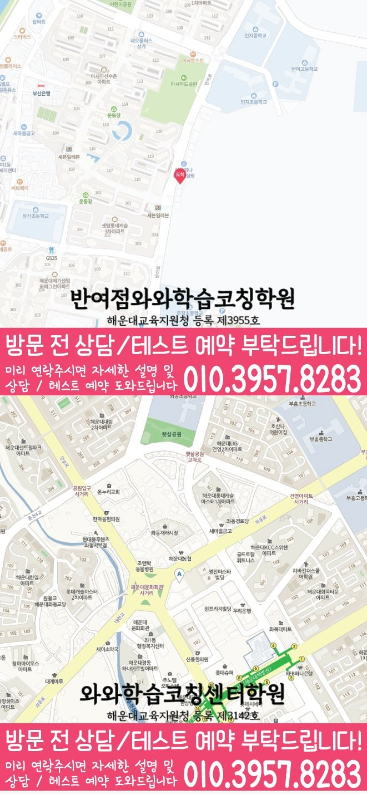

MIDDLE SCHOOL ENGLISH GUIDE
해운대 중동 중2 영어학원
부산 해운대구 해운대 중동 중2 영어학원 선택을 위해 와와학습코칭센터 좌동점 공개 정보와 교과서·문법·독해·어휘·서술형 학습 및 상담 기준을 정리했습니다.
해운대 중동부산 해운대구
중2영어 가능 학년 기재



핵심 답변
해운대 중동 중2 영어학원, 무엇부터 확인해야 할까요?
해운대 중동에서 중2 영어학원을 비교할 때는 교과서 진도만 보지 말고 어휘 재현, 문법 적용, 독해 근거, 서술형 수정과 시험 전 복습 기록을 함께 살펴야 합니다. 중1 기초 문법의 공백이 중2 교과서 해석까지 이어지는 학생이라면 특히 독해 정확도이 다른 영역으로 어떻게 연결되는지 확인하는 것이 좋습니다.
LOCAL ENGLISH STUDY GUIDE
부산 해운대구 해운대 중동 중2 영어 학습 설계
중학교 2학년 영어는 단어, 문법, 독해와 서술형이 따로 움직이지 않습니다. 해운대 중동 학생에게 필요한 시작점은 최근 시험에서 막힌 영역을 나누고, 중1 공백 복원 → 중2 교과서 연결 → 학교 프린트 적용 → 누적 복습의 순서로 혼자 다시 확인할 수 있게 만드는 것입니다. 해운대 중동에서 이 기준을 적용할 때에는 와와학습코칭센터 좌동점 상담에서는 이 기준이 평소 수업과 시험 범위 발표 이후에 각각 어떻게 달라지는지 질문해 보는 편이 좋습니다.
해운대 중동 중2 영어에서 함께 관리할 네 영역
서술형은 수정 이유를 남기는 방식으로
서술형 오답은 내용 전달, 단어 선택, 어순과 문법 형태를 따로 채점해 다음 답안에서 먼저 볼 항목을 정합니다. 해운대 중동에서 이 기준을 적용할 때에는 수업 직후, 주중, 시험 전으로 단어와 오답을 다시 볼 시점을 정합니다. 이 원칙을 해운대중의 현재 진도와 대조하면 먼저 보완할 영역과 미뤄도 되는 영역을 나눌 수 있습니다.
문법을 답이 아닌 문장 구조로 확인
개념 설명을 들은 다음 교과서 문장에서 해당 구조를 찾고, 조건이 바뀐 문장을 스스로 고쳐 쓰는 단계까지 확인합니다. 해운대 중동에서는 학교 범위가 확정되기 전에는 누적 공백을, 확정된 뒤에는 교과서와 프린트 적용을 우선하는지 확인합니다.
어휘는 교과서 문맥과 함께 누적
시험 범위 단어는 당일 암기 결과보다 이틀 뒤와 주말에 문장 속 의미를 다시 떠올릴 수 있는지 확인합니다. 해운대 중동에서는 중1 기초 문법의 공백이 중2 교과서 해석까지 이어지는 학생에게 같은 기준을 적용했을 때 어느 단계에서 시간이 오래 걸리는지 따로 기록해 보는 것이 좋습니다.
독해는 근거 문장과 연결어까지 표시
첫 문장부터 끝까지 같은 속도로 해석하기보다 문단 역할을 나누고 답을 판단한 근거가 어느 문장에 있는지 표시합니다. 해운대 중동에서 이 기준을 적용할 때에는 학생이 질문을 기다리지 않도록 막힌 문장에 표시하고, 와와학습코칭센터 좌동점 수업에서 확인한 뒤 유사 문장에 적용하는 단계까지 이어지는지 봅니다.
신도중 등 학교 자료를 확인할 때의 기준
공개 자료상 신도중, 부흥중, 신곡중, 해운대중, 해강중 등이 안내되어 있지만 실제 시험 준비 범위는 학생마다 다시 확인해야 합니다. 교과서·부교재·프린트 중 무엇이 평가에 포함되는지 상담 자료에 표시합니다.
서술형 조건
문장 수, 핵심 표현, 어순과 문법 조건을 나누고 답안을 고친 이유까지 확인합니다. 부산 해운대구 해운대 중동 학생에게 적용할 때는 중1 공백 복원 → 중2 교과서 연결 → 학교 프린트 적용 → 누적 복습의 순서가 주간 일정 안에서 가능한지도 함께 계산해야 합니다.
어휘 확인 범위
해운대 중동의 어휘 범위는 본문 표제어에서 끝내지 않습니다. 변형 형태·숙어·유의어와 와와학습코칭센터 좌동점 수업에서 추가된 표현까지 포함됐는지 따로 확인합니다. 이 기준은 해운대 중동 중2 영어 선택을 위한 비교 항목이며 특정 점수 변화나 결과를 예상하게 하는 문구로 사용하지 않습니다.
문법 적용 방식
해운대 중동 문법 점검에서는 개념 설명 다음의 행동을 봅니다. 교과서 문장과 변형 문장에서 같은 구조를 찾아 적용하는 과정을 와와학습코칭센터 좌동점 상담에서 확인합니다. 해운대 중동에서 이 기준을 적용할 때에는 와와학습코칭센터 좌동점의 시간표와 함께 이 활동에 필요한 수업 외 복습 시간을 물어봐야 학생이 실제로 실행할 수 있는 분량을 정할 수 있습니다.
독해 정확도을 중심으로 구성한 주간 수업 흐름
01. 어휘 재현 확인
뜻을 가리고 말하는 것뿐 아니라 문장 속 품사와 쓰임을 구분할 수 있는지 봅니다. 해운대 중동에서 이 기준을 적용할 때에는 부흥중을 포함한 학교 자료는 이름만 나열하지 않고 교과서 본문, 프린트, 수행평가 중 어떤 자료인지 구분해 준비합니다.
02. 문장 단위 보완
부족한 개념을 짧게 정리한 뒤 교과서 문장과 새 문장에 같은 기준을 적용합니다. 해운대 중동에서 이 기준을 적용할 때에는 중1 기초 문법의 공백이 중2 교과서 해석까지 이어지는 학생이라면 이 항목의 난도를 높이기 전에 기본 문장에서 정확하게 재현되는 횟수를 먼저 확인하는 편이 좋습니다.
03. 학교 자료 연결
현재 학교 진도와 프린트에 적용하면서 정답 근거와 수정 이유를 말하게 합니다. 해운대구 해운대 중동의 학교 일정과 학생의 다른 과제량을 함께 놓고 보면 같은 학습량이라도 완료 날짜를 다르게 정해야 할 수 있습니다.
04. 시험 전 압축
단어·본문·문법·서술형의 남은 항목을 한 장의 확인표로 압축합니다. 해운대 중동 상담에서는 부흥중의 실제 시험 범위를 준비해 이 기준이 현재 단원에도 맞는지 확인하는 편이 안전합니다.
해운대 중동 학생의 답안에서 시작하는 영어 점검 순서
진단 신호
해운대 중동에서는 문법 문제는 맞히지만 교과서 문장에서 같은 구조를 찾지 못하는지부터 살펴봅니다. 중1 기초 문법의 공백이 중2 교과서 해석까지 이어지는 학생에게 같은 기준을 적용하면 막힌 위치를 진도보다 구체적으로 나눌 수 있습니다.
첫 학습 행동
틀린 서술형 한 문장을 내용 누락·어순·동사 형태·철자로 분리해 먼저 고칠 항목을 정합니다. 공개 자료에 기재된 부흥중의 실제 교과서와 시험 범위는 상담 시 최신 자료로 대조합니다.
완료 판단
정해진 분량을 푼 것보다 틀린 선택지를 제외한 이유까지 설명했는지를 먼저 확인합니다. 이 결과는 와와학습코칭센터 좌동점 상담에서 다음 주 복습량을 조정하는 질문으로 사용합니다.
일정 배치
수행평가 준비일과 지필평가 복습일을 별도로 표시해 두 일정이 서로 밀어내지 않게 합니다. 와와학습코칭센터 좌동점의 공개 위치 안내인 ‘부산 2호선 장산역 10번 출구 도보 10분 거리, 1층 장독대(반찬)/호두과자 가게 있습니다.’도 참고해 통학 시간을 계산하되 실제 이동 동선은 상담 전에 다시 확인합니다.
간격을 둔 재확인
해운대 중동 학습 기록에서는 한 주 뒤에도 같은 오답 이유가 남는지 비교해 다음 복습에서 유지할 항목과 뺄 항목을 정합니다. 부흥중 자료의 현재 범위와 겹치는 문장부터 확인합니다.
근거 기록
시험 범위가 바뀌면 기존 계획을 지우지 않고 변경 전후 순서를 남겨 남은 분량을 다시 계산합니다. 이 기록을 와와학습코칭센터 좌동점의 다음 수업 계획과 대조해 피드백이 실제 행동으로 이어지는지 봅니다.
상담 비교 기준
피드백이 자세하다는 표현보다 오류 원인과 다음 재확인 날짜가 실제 기록에 있는지 봅니다. 부산 해운대구의 일정과 해운대 중동 학생이 확보한 복습 시간을 함께 놓고 판단합니다.
와와학습코칭센터 좌동점에 문의할 때는 “학부모에게 전달되는 기록에 오류 원인과 다음 확인 날짜가 함께 적히는지”를 확인하고, 교과서 본문을 보지 않고 핵심 문장을 설명할 수 있는지도 최근 답안과 함께 준비하면 수업 설명을 학생 상황에 맞춰 비교하기 쉽습니다.
해운대 중동 중2 영어 학습 기록을 읽는 다섯 기준
답안에서 찾을 신호
해운대 중동 기록에서는 최근 시험지에서 정답 여부와 근거 설명 여부를 따로 표시합니다. 새 자료를 추가하기 전에 이미 받은 학교 자료의 미완료 항목을 먼저 확인합니다.
첫 수업의 행동
해운대 중동 학생에게는 막힌 문장을 바로 설명하기 전에 학생이 주어·동사와 연결어를 먼저 표시하게 합니다. 와와학습코칭센터 좌동점 상담에서는 이 행동이 실제 피드백에 남는지 확인합니다.
완료와 재확인
해운대 중동의 완료 기준은 다음과 같습니다. 새 문장에서 근거를 찾고 틀린 선택지의 이유까지 말할 때 다음 단계로 이동합니다. 다음 확인일의 결과가 달라지면 해운대 중동의 복습 순서부터 다시 조정합니다.
주간 일정 배치
해운대 중동 주간표에는 통학과 다른 과목 시간을 뺀 실제 여유 시간을 기준으로 영어 분량을 다시 계산합니다. 신도중의 현재 일정은 학생이 가져온 자료로 다시 대조합니다.
상담에서 물을 질문
와와학습코칭센터 좌동점에 문의할 때는 사용 교재 이름보다 학생이 설명하고 고치는 시간이 실제 수업에 있는지 질문합니다. 교과서 본문을 보지 않고 핵심 문장을 설명할 수 있는지도 최근 답안과 함께 확인합니다.
기록 해석
해운대 중동의 영어 기록을 볼 때는 주간 완료율은 계획한 문제 수가 아니라 어휘·본문·오답별 통과 항목으로 계산합니다. 와와학습코칭센터 좌동점에서는 이 기록이 다음 과제에 반영되는지도 확인합니다.
가정 복습 연결
해운대 중동 학생의 실제 생활 시간에는 시험 전에는 새 자료를 추가하기보다 이미 표시한 오류의 재현 여부를 먼저 확인합니다. 실행 여부는 다음 상담에서 계획표와 함께 확인합니다.
다음 주 조정
해운대 중동의 다음 주 계획은 고정하지 않습니다. 다음 주에는 해결된 오류를 제외하고 여전히 설명하지 못한 문장부터 분량을 다시 정합니다. 조정 결과는 학생 답안으로 다시 확인합니다.
중2 영어 학습 계획은 교과서 진도와 학생의 실제 복습 시간을 함께 놓고 조정해야 합니다. 교과서 본문을 보지 않고 핵심 문장을 설명할 수 있는지를 상담 질문으로 준비하면 수업 방식을 더 구체적으로 비교할 수 있습니다. 공개 자료 기준으로 해운대 중동 중2 영어 상담이 가능한 학년 범위에 들어갑니다. 시간표와 개강 일정은 고정 정보로 단정하지 않고 다시 확인합니다.
VERIFIED LOCAL FACTS
해운대 중동 센터 정보와 수업 확인 항목
기존 전국학원 페이지와 공개 센터 자료에 있는 사실만 사용했으며, 기재되지 않은 학교나 운영 조건은 임의로 만들지 않았습니다.
부산광역시 해운대구 좌동 좌동로 88 울트라타워 5층 508호
해운대교육지원청 등록 제3142호
공개 센터 자료의 영어 가능 학년에 중2가 포함되어 있습니다. 실제 반 편성과 일정은 와와학습코칭센터 좌동점 상담에서 확인해야 합니다.
수업 횟수·시간표·보강 기준과 함께 비교합니다.
부산 2호선 장산역 10번 출구 도보 10분 거리, 1층 장독대(반찬)/호두과자 가게 있습니다.
공개 자료의 중학교 안내 · 5개
공개 자료의 영어 가능 학년
센터 교습비 자료 확인상담 전 체크리스트
해운대 중동 중2 영어학원 비교 전에 적어둘 내용
해운대 중동 학생의 시험지에서 교과서 본문을 보지 않고 핵심 문장을 설명할 수 있는지를 확인할 수 있는 문장과 수정 흔적을 한두 개 표시합니다.
중1 기초 문법의 공백이 중2 교과서 해석까지 이어지는 학생에게 어휘·문법·독해·서술형 중 먼저 바꿀 영역을 하나 정하고 독해 정확도과의 연결을 메모합니다.
공개 위치 안내 ‘부산 2호선 장산역 10번 출구 도보 10분 거리, 1층 장독대(반찬)/호두과자 가게 있습니다.’를 참고해 이동 시간을 계산하고 실제 출입구는 방문 전에 다시 확인합니다.
평소 누적 복습이 해운대 중동 학교 범위 발표 뒤 교과서·프린트·서술형 중심으로 어떻게 바뀌는지 질문합니다.
FAQ & PARENT VIEW
해운대 중동 중2 영어학원 자주 묻는 질문과 학부모 상담 관점
화면 질문과 답변은 JSON-LD에도 동일하게 반영했습니다. 상담 관점은 특정 성과를 보장하는 후기가 아니라 비교에 참고할 수 있도록 재구성한 예시입니다.
해운대 중동 중2 영어학원 상담 전에 어떤 영어 자료를 준비하면 좋나요?
최근 영어 시험지, 교과서와 학교 프린트, 현재 단어장, 틀린 서술형 답안을 준비하세요. 특히 교과서 본문을 보지 않고 핵심 문장을 설명할 수 있는지를 메모하면 시작점을 더 구체적으로 설명할 수 있습니다. 공개 정보만으로 단정하지 않고 와와학습코칭센터 좌동점의 현재 운영 내용과 학생 자료를 대조합니다. 이 답변은 해운대 중동 페이지의 공개 정보 범위에서 정리했습니다.
해운대 중동 중2 영어학원은 어떤 학생에게 맞는지 어떻게 판단하나요?
중1 기초 문법의 공백이 중2 교과서 해석까지 이어지는 학생이라면 설명 뒤 문장을 스스로 해석하고 고치는 과정이 있는지 확인해야 합니다. 수업 직후, 주중, 시험 전으로 단어와 오답을 다시 볼 시점을 정합니다. 해운대 중동 중2 영어에서는 독해 정확도이 다른 영역과 어떻게 연결되는지도 살펴봅니다. 이 답변은 해운대 중동 페이지의 공개 정보 범위에서 정리했습니다.
와와학습코칭센터 좌동점에서 중2 영어 수강이 가능한가요?
공개된 와와학습코칭센터 좌동점 영어 가능 학년은 초4, 초5, 초6, 중1, 중2, 중3, 고1, 고2, 고3이며 중2가 포함되어 있습니다. 실제 시간표, 반 편성과 시작 가능일은 해운대 중동 상담에서 최신 정보로 다시 확인합니다. 신도중 자료가 있다면 정답 표시보다 틀린 문장과 수정 흔적을 준비하는 것이 좋습니다. 이 답변은 해운대 중동 페이지의 공개 정보 범위에서 정리했습니다.
해운대 중동의 학교별 영어 자료는 어떻게 확인하나요?
공개된 와와학습코칭센터 좌동점 자료에는 신도중, 부흥중, 신곡중, 해운대중, 해강중 등 5개 중학교가 기재되어 있습니다. 신도중을 포함한 실제 교과서·시험 범위·일정은 상담할 때 최신 학교 자료로 다시 확인합니다. 해운대 중동 중2 영어에서는 독해 정확도이 다른 영역과 어떻게 연결되는지도 살펴봅니다. 이 답변은 해운대 중동 페이지의 공개 정보 범위에서 정리했습니다.
해운대 중동 중2 영어는 문법과 독해를 함께 관리하나요?
개념을 정리할 때는 나눌 수 있지만 내신에서는 문법이 교과서 문장과 독해 선택지에 함께 쓰입니다. 배운 구조를 지문에서 찾고 해석 근거로 연결하는 과정을 확인합니다. 부산 해운대구 해운대 중동의 통학·복습 시간을 함께 놓고 실행 가능한 분량인지 계산합니다. 이 답변은 해운대 중동 페이지의 공개 정보 범위에서 정리했습니다.
해운대 중동 중2 영어 내신은 어느 영역부터 시작하나요?
어휘·문법·독해·서술형 중 최근 답안에서 가장 흔들린 영역을 먼저 구분하고 중1 공백 복원 → 중2 교과서 연결 → 학교 프린트 적용 → 누적 복습의 순서로 학교 자료에 연결합니다. 신도중 자료가 있다면 정답 표시보다 틀린 문장과 수정 흔적을 준비하는 것이 좋습니다. 이 답변은 해운대 중동 페이지의 공개 정보 범위에서 정리했습니다.
와와학습코칭센터 좌동점 상담에서 시간표와 교습비는 어떻게 확인하나요?
공개 교습비 링크와 주당 횟수, 시작·종료 시각, 결석·보강 기준, 시험 기간 일정 변동을 같은 표에 적어 비교합니다. 이 기준은 해운대 중동 학생의 최근 답안과 학교 일정에 맞춰 확인합니다. 이 답변은 해운대 중동 페이지의 공개 정보 범위에서 정리했습니다.
RELATED GUIDES
해운대 중동 중2 과목과 다른 지역 비교
같은 동네 수학 안내와 시군구·광역권을 우선한 영어 페이지를 상호 연결했습니다.